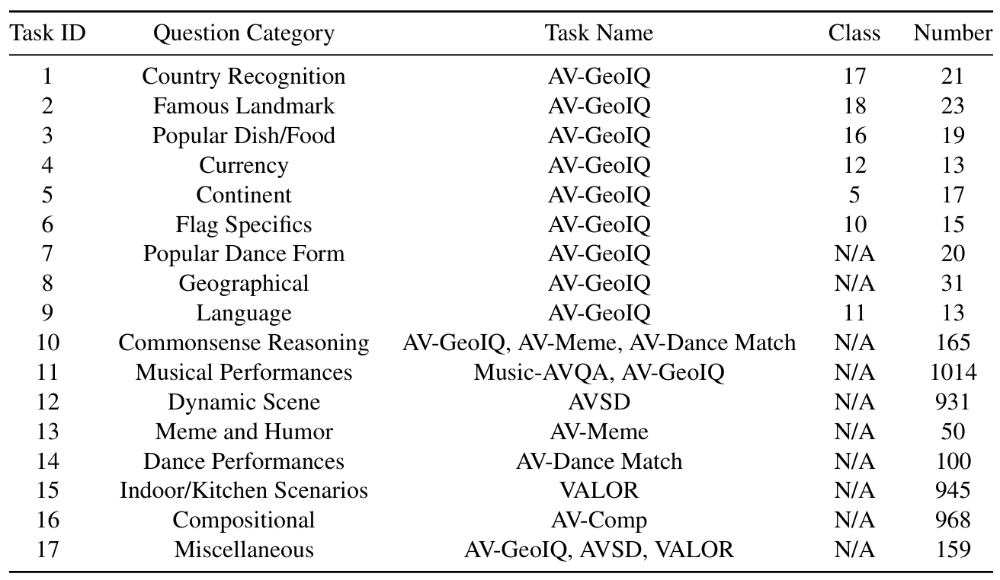

We introduce AURELIA, a novel actor-critic based audio-visual (AV) reasoning framework that distills structured, step-by-step reasoning into AVLLMs at test time, improving their ability to process complex multi-modal inputs without additional training or fine-tuning. To further advance AVLLM reasoning skills, we present AVReasonBench, a challenging benchmark compris- ing 4500 audio-visual questions, each paired with detailed step-by-step reasoning. Our benchmark spans six distinct tasks, including AV-GeoIQ, which evaluates AV reasoning combined with geographical and cultural knowledge.
AURELIA consists of a multi-agent interactive framework that functions in sync and generates reasoning steps that are then distilled inside the target model. The input set consisting of the audio, video, and question is first fed into the reasoning generator agent, which generates an initial set of reasoning steps that provide a structured pathway to reach the final answer. These reasoning steps are synthesized into a detailed caption by a Summarizer agent. The Evaluator agent then outputs a score that measures the relevance of the caption with the input audio and video. A feedback mechanism then provides supervision to the Reasoning generator based on the evaluation score, which adjusts its output to maximize the evaluation score. This actor-critique framework continues until the evaluation score exceeds a specific threshold or the number of iterations are exhausted.
AVReasonBench comprises of 4500 audio-visual questions, each paired with detailed step-by-step reasoning. Our benchmark spans six distinct tasks, including AV-GeoIQ, which evaluates AV reasoning combined with geographical and cultural knowledge.
@article{chowdhury2025aurelia,
title={Aurelia: Test-time Reasoning Distillation in Audio-Visual LLMs},
author={Chowdhury, Sanjoy and Gani, Hanan and Anand, Nishit and Nag, Sayan and Gao, Ruohan and Elhoseiny, Mohamed and Khan, Salman and Manocha, Dinesh},
journal={arXiv preprint arXiv:2503.23219},
year={2025}
}